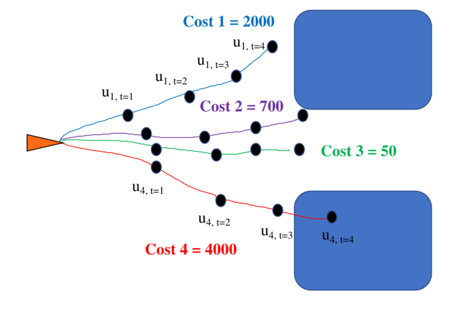

Learning based Model Predictive Path Integral Controller for Autonomous Surface Vehicles
Model Predictive Path Integral (MPPI) control is an optimization-based approach for trajectory planning and control in Autonomous Surface Vessels (ASVs). It leverages a sampling-based stochastic optimization framework to evaluate multiple control trajectories in parallel, selecting the one that minimizes a predefined cost function while considering vessel dynamics and environmental constraints.
Project Overview
In this project, I have developed a learning-based Model Predictive Path Integral (MPPI) controller for autonomous surface vehicles. The controller is designed to optimize the path and control inputs of the vehicle in real-time, ensuring efficient and safe navigation in dynamic environments The algorithm has been tested for waypoint tracking task in real vessel in wave basin.
Unlike traditional model predictive control (MPC), MPPI does not require solving complex constrained optimization problems explicitly, making it well-suited for real-time applications. Its inherent ability to handle nonlinear dynamics and disturbances makes MPPI highly effective for ASV docking, station-keeping, and obstacle avoidance in dynamic marine environments.
| Feature | Model Predictive Control (MPC) | Model Predictive Path Integral (MPPI) |
|---|---|---|
| Optimization Approach | Solves constrained optimization problems using quadratic programming or nonlinear solvers | Uses sampling-based stochastic optimization for trajectory selection |
| Computational Complexity | High, especially with constraints and nonlinear dynamics | Lower due to parallel sampling and GPU acceleration |
| Handling of Nonlinear Dynamics | Requires linearization or nonlinear solvers, making it complex | Naturally handles nonlinear and stochastic dynamics |
| Real-Time Applicability | Computationally expensive, may struggle in real-time applications | Well-suited for real-time control due to parallel sampling |
| Constraint Handling | Explicitly incorporates constraints in optimization | Constraints must be indirectly handled via cost function tuning |
| Robustness to Disturbances | Moderate, depends on solver accuracy and constraint formulation | High, as it evaluates multiple stochastic trajectories in parallel |
| Ease of Implementation | Requires mathematical formulation of constraints and dynamics | More flexible, relies on sampling and cost evaluation |
Key Features
- Real-time path optimization using MPPI
- Integration with ROS2 and Micro ROS for advanced autonomy
- Utilization of Jetson Nano for onboard processing
- Support for various sensors including SBG and UWB
Technical Specifications
- Controller Type: Model Predictive Path Integral
- Platform: Jetson Nano, Arduino DUE
- Sensors: SBG, UWB
- Software: ROS2, Micro ROS
MPPI Cost Function Equations
The Model Predictive Path Integral (MPPI) controller uses a cost function to optimize the trajectory for tracking the desired waypoints. The cost function consists of several components:
\[ C_{\text{total}} = C_{\text{cross_track}} + C_{\text{course_angle}} + C_{\text{goal}} + C_{\text{velocity}} . \]
1. Cross-Track Error Cost
Mathematical Representation:
\[ \text{CTE} = \text{clip}\left(\frac{(x_g - x_i)(y - y_g) - (y_g - y_i)(x - x_g)}{||\vec{v}_1||}\right) \]
Measures the perpendicular distance from the current position to the goal path.
2. Course Angle Cost
Mathematical Representation:
\[ \text{Course Angle Error} = \text{clip}\left(\arctan2(\dot{y}, \dot{x}) - \arctan2(y_g - y, x_g - x)\right) \]
Calculates the difference between the current course angle and the desired path angle.
3. Goal Cost
Mathematical Representation:
\[ \text{Goal Cost} = \left|\left|\begin{pmatrix}x \\ y\end{pmatrix} - \begin{pmatrix}x_g \\ y_g\end{pmatrix}\right|\right| \]
Euclidean distance between current position and goal position.
4. Velocity Cost
Mathematical Representation:
\[ \begin{aligned} \text{Velocity Cost} = & \max(0, -v_x) \cdot w_{\text{back}} + \\ & v_y^2 \cdot w_{\text{lateral}} + \\ & r^2 \cdot w_{\text{rotational}} + \\ & \max(0, ||\vec{v}|| - v_{\text{max}})^2 \cdot w_{\text{speed}} \end{aligned} \]
Penalizes backward velocity, lateral velocity, rotational velocity, and exceeding maximum speed.
Note: Variables represent velocities in body frame, transformed using rotation matrix.
Learnable Cost Network
A key innovation in our approach is the integration of a learnable cost function within the MPPI framework. Instead of relying solely on hand-crafted cost functions, we developed a neural network that learns to predict costs directly from state features.
Network Architecture
The learnable cost network takes as input the same features used in our analytical cost function:
- Cross-Track Error (CTE)
- Course Angle Error (CAE)
- Goal position error
- Velocity components (forward, lateral, rotational)
These features are processed through a neural network with 3 hidden layers to produce a scalar cost value that can be directly used by the MPPI algorithm.
The network can be represented as:
\[ C_{\text{network}}(\text{CTE}, \text{CAE}, \text{Goal Error}, \vec{v}) = f_{\theta}(\text{features}) \]
Where \(f_{\theta}\) is the neural network with parameters \(\theta\).
Training Process
The training of the cost network follows a two-stage approach:
Stage 1: Initialization with Analytical Cost
Initially, the network is trained to mimic our analytical cost function:
\[ \mathcal{L}_{\text{init}}(\theta) = \mathbb{E}_{\text{states}} \left[ (C_{\text{network}}(\text{features}) - C_{\text{analytical}}(\text{features}))^2 \right] \]
This ensures the network starts with a reasonable cost function that captures the basic navigation objectives.
Stage 2: Refinement with Expert Data
The network is further refined using data collected from expert demonstrations:
- Expert trajectories are recorded from skilled human operators navigating the vessel
- States along expert trajectories are assigned lower costs
- Randomly sampled states or states from suboptimal trajectories are assigned higher costs
The refinement loss function is:
\[ \mathcal{L}_{\text{expert}}(\theta) = \mathbb{E}_{\text{expert}} \left[ C_{\text{network}}(\text{features}) \right] - \mathbb{E}_{\text{non-expert}} \left[ C_{\text{network}}(\text{features}) \right] + \lambda \cdot \text{margin} \]
This contrastive approach encourages the network to assign lower costs to expert-like states and higher costs to non-expert states.
Integration with MPPI
The learned cost network is integrated into the MPPI framework by replacing or complementing the analytical cost function:
\[ C_{\text{total}} = \alpha \cdot C_{\text{analytical}} + (1 - \alpha) \cdot C_{\text{network}} \]
Where \(\alpha\) is a weighting parameter that can be adjusted to balance the analytical and learned components.
Advantages
This learnable cost approach offers several benefits:
- Captures nuanced navigation behaviors that are difficult to express analytically
- Adapts to specific environmental conditions through expert demonstrations
- Reduces the need for manual tuning of cost function parameters
- Improves performance in complex scenarios like narrow passages and docking